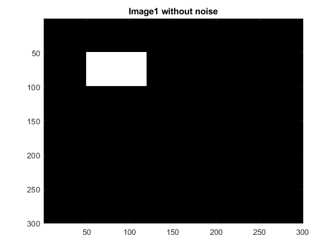
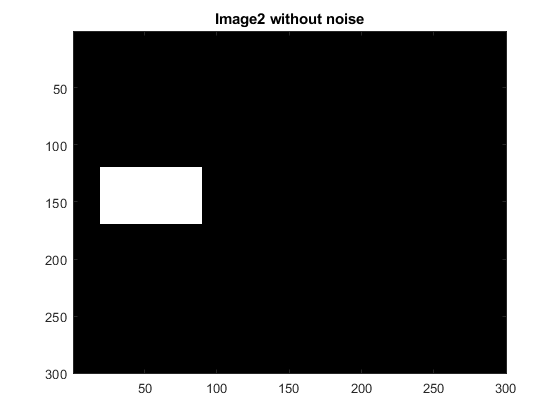
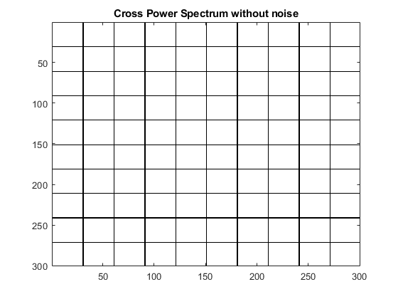
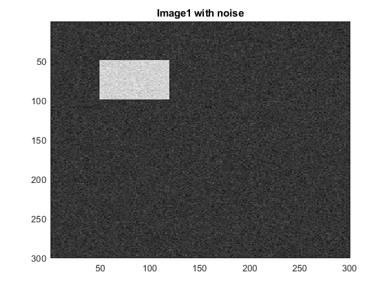
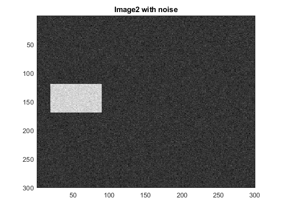
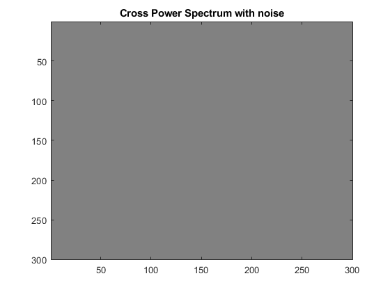

tic;
I1 = zeros(300,300);
I2 = zeros(300,300);
tx = -30; ty = 70;
for i = 50:99
for j = 50:119
I1(i,j) = 255;
end
end
for i = 50+ty:99+ty
for j = 50+tx:119+tx
I2(i,j) = 255;
end
end
figure;
imagesc(I1)
title("Image1 without noise");colormap(gray);
figure;
imagesc(I2)
title("Image2 without noise");colormap(gray);
F1 = fft2(I1);
F2 = fft2(I2);
CPS = (F1.*conj(F2));
aCPS = abs(CPS);
aCPS(aCPS == 0) = 1;
CPS = CPS./aCPS;
figure; imagesc(log(abs(CPS)+1)); colormap(gray);
title("Cross Power Spectrum without noise");
I3 = real(ifft2(CPS));
[ttx,tty]=find(I3==max(I3(:)));
fprintf("found translation (without noise) tx = %f, ty = %f\n",-tty+1,300-ttx+1);
I1 = I1+randn(size(I1))*20;
I2 = I2+randn(size(I2))*20;
figure;
imagesc(I1)
title("Image1 with noise");colormap(gray);
figure;
imagesc(I2)
title("Image2 with noise");colormap(gray);
F1 = fft2(I1);
F2 = fft2(I2);
CPS = (F1.*conj(F2));
aCPS = abs(CPS);
aCPS(aCPS == 0) = 1;
CPS = CPS./aCPS;
figure; imagesc(log(abs(CPS)+1)); colormap(gray);
title("Cross Power Spectrum with noise");
I3 = real(ifft2(CPS));
[ttx,tty]=find(I3==max(I3(:)));
fprintf("found translation (with noise) tx = %f, ty = %f\n",-tty+1,300-ttx+1);
toc;
found translation (without noise) tx = -30.000000, ty = 70.000000
found translation (with noise) tx = -30.000000, ty = 70.000000
Elapsed time is 0.293254 seconds.
     